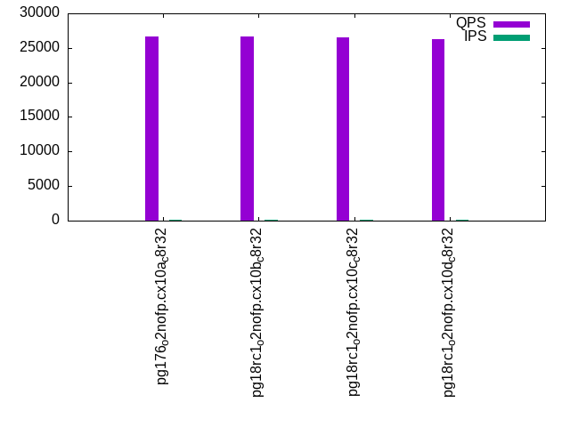

Introduction
This is a report for the insert benchmark with 30M docs and 1 client(s). It is generated by scripts (bash, awk, sed) and Tufte might not be impressed. An overview of the insert benchmark is here and a short update is here. Below, by DBMS, I mean DBMS+version.config. An example is my8020.c10b40 where my means MySQL, 8020 is version 8.0.20 and c10b40 is the name for the configuration file.
The test server has 8 AMD cores, 32G RAM and an NVMe device for the database. The benchmark was run with 1 client and there were 1 or 3 connections per client (1 for queries or inserts without rate limits, 1+1 for rate limited inserts+deletes). It uses 1 table with a table per client. It loads 30M rows per table without secondary indexes, creates 3 secondary indexes per table, then inserts 40m+10m rows per table with a delete per insert to avoid growing the table. It then does 6 read+write tests for 3600s each that do queries as fast as possible with 100,100,500,500,1000,1000 inserts/s and the same for deletes/s per client concurrent with the queries. The database is cached by Postgres. Clients and the DBMS share one server.
The tested DBMS are:
- pg176_o2nofp.cx10a_c8r32 - Postgres 17.6 with the x10b_c8r32 config
- pg18rc1_o2nofp.cx10b_c8r32 - Postgres 18 rc1 with the x10b_c8r32 config that uses io_method=sync
- pg18rc1_o2nofp.cx10c_c8r32 - Postgres 18 rc1 with the x10c_c8r32 config that uses io_method=worker
- pg18rc1_o2nofp.cx10d_c8r32 - Postgres 18 rc1 with the x10c_c8r32 config that uses io_method=io_uring
Contents
- Summary
- l.i0: load without secondary indexes
- l.x: create secondary indexes
- l.i1: continue load after secondary indexes created with 50 inserts per transaction
- l.i2: continue load after secondary indexes created with 5 inserts per transaction
- qr100.L1: range queries with 100 insert/s per client
- qp100.L2: point queries with 100 insert/s per client
- qr500.L3: range queries with 500 insert/s per client
- qp500.L4: point queries with 500 insert/s per client
- qr1000.L5: range queries with 1000 insert/s per client
- qp1000.L6: point queries with 1000 insert/s per client
Summary
The numbers are inserts/s for l.i0, l.i1 and l.i2, indexed docs (or rows) /s for l.x and queries/s for qr100, qp100 thru qr1000, qp1000" The values are the average rate over the entire test for inserts (IPS) and queries (QPS). The range of values for IPS and QPS is split into 3 parts: bottom 25%, middle 50%, top 25%. Values in the bottom 25% have a red background, values in the top 25% have a green background and values in the middle have no color. A gray background is used for values that can be ignored because the DBMS did not sustain the target insert rate. Red backgrounds are not used when the minimum value is within 80% of the max value.
| dbms | l.i0 | l.x | l.i1 | l.i2 | qr100 | qp100 | qr500 | qp500 | qr1000 | qp1000 |
|---|---|---|---|---|---|---|---|---|---|---|
| pg176_o2nofp.cx10a_c8r32 | 211268 | 500002 | 21834 | 2796 | 26623 | 13151 | 24084 | 13160 | 24119 | 13036 |
| pg18rc1_o2nofp.cx10b_c8r32 | 205479 | 508476 | 22409 | 2837 | 26696 | 13103 | 24109 | 13165 | 24169 | 13024 |
| pg18rc1_o2nofp.cx10c_c8r32 | 202703 | 500002 | 22359 | 2946 | 26561 | 13095 | 23833 | 13060 | 23710 | 13022 |
| pg18rc1_o2nofp.cx10d_c8r32 | 205479 | 500002 | 22099 | 2810 | 26256 | 13098 | 23936 | 13062 | 23921 | 12945 |
This table has relative throughput, throughput for the DBMS relative to the DBMS in the first line, using the absolute throughput from the previous table. Values less than 0.95 have a yellow background. Values greater than 1.05 have a blue background.
| dbms | l.i0 | l.x | l.i1 | l.i2 | qr100 | qp100 | qr500 | qp500 | qr1000 | qp1000 |
|---|---|---|---|---|---|---|---|---|---|---|
| pg176_o2nofp.cx10a_c8r32 | 1.00 | 1.00 | 1.00 | 1.00 | 1.00 | 1.00 | 1.00 | 1.00 | 1.00 | 1.00 |
| pg18rc1_o2nofp.cx10b_c8r32 | 0.97 | 1.02 | 1.03 | 1.01 | 1.00 | 1.00 | 1.00 | 1.00 | 1.00 | 1.00 |
| pg18rc1_o2nofp.cx10c_c8r32 | 0.96 | 1.00 | 1.02 | 1.05 | 1.00 | 1.00 | 0.99 | 0.99 | 0.98 | 1.00 |
| pg18rc1_o2nofp.cx10d_c8r32 | 0.97 | 1.00 | 1.01 | 1.01 | 0.99 | 1.00 | 0.99 | 0.99 | 0.99 | 0.99 |
This lists the average rate of inserts/s for the tests that do inserts concurrent with queries. For such tests the query rate is listed in the table above. The read+write tests are setup so that the insert rate should match the target rate every second. Cells that are not at least 95% of the target have a red background to indicate a failure to satisfy the target.
| dbms | qr100.L1 | qp100.L2 | qr500.L3 | qp500.L4 | qr1000.L5 | qp1000.L6 |
|---|---|---|---|---|---|---|
| pg176_o2nofp.cx10a_c8r32 | 100 | 100 | 499 | 499 | 999 | 999 |
| pg18rc1_o2nofp.cx10b_c8r32 | 100 | 100 | 500 | 500 | 999 | 999 |
| pg18rc1_o2nofp.cx10c_c8r32 | 100 | 100 | 500 | 500 | 999 | 999 |
| pg18rc1_o2nofp.cx10d_c8r32 | 100 | 100 | 500 | 499 | 999 | 999 |
| target | 100 | 100 | 500 | 500 | 1000 | 1000 |
l.i0
l.i0: load without secondary indexes. Graphs for performance per 1-second interval are here.
Average throughput:
Insert response time histogram: each cell has the percentage of responses that take <= the time in the header and max is the max response time in seconds. For the max column values in the top 25% of the range have a red background and in the bottom 25% of the range have a green background. The red background is not used when the min value is within 80% of the max value.
| dbms | 256us | 1ms | 4ms | 16ms | 64ms | 256ms | 1s | 4s | 16s | gt | max |
|---|---|---|---|---|---|---|---|---|---|---|---|
| pg176_o2nofp.cx10a_c8r32 | 99.993 | 0.006 | 0.001 | 0.012 | |||||||
| pg18rc1_o2nofp.cx10b_c8r32 | 99.991 | 0.009 | 0.003 | ||||||||
| pg18rc1_o2nofp.cx10c_c8r32 | 99.994 | 0.004 | 0.002 | 0.009 | |||||||
| pg18rc1_o2nofp.cx10d_c8r32 | 99.985 | 0.013 | 0.002 | 0.013 |
Performance metrics for the DBMS listed above. Some are normalized by throughput, others are not. Legend for results is here.
ips qps rps rmbps wps wmbps rpq rkbpq wpi wkbpi csps cpups cspq cpupq dbgb1 dbgb2 rss maxop p50 p99 tag 211268 0 0 0.0 784.8 89.3 0.000 0.000 0.004 0.433 22551 19.9 0.107 8 2.9 7.8 2.4 0.012 211764 204182 pg176_o2nofp.cx10a_c8r32 205479 0 0 0.0 761.8 86.6 0.000 0.000 0.004 0.431 22049 19.6 0.107 8 2.9 7.8 0.6 0.003 206164 199573 pg18rc1_o2nofp.cx10b_c8r32 202703 0 0 0.0 757.1 86.0 0.000 0.000 0.004 0.435 21833 19.6 0.108 8 2.9 7.8 2.4 0.009 204777 197748 pg18rc1_o2nofp.cx10c_c8r32 205479 0 0 0.0 763.3 86.7 0.000 0.000 0.004 0.432 22004 19.8 0.107 8 2.9 7.8 1.8 0.013 206678 198577 pg18rc1_o2nofp.cx10d_c8r32
l.x
l.x: create secondary indexes.
Average throughput:
Performance metrics for the DBMS listed above. Some are normalized by throughput, others are not. Legend for results is here.
ips qps rps rmbps wps wmbps rpq rkbpq wpi wkbpi csps cpups cspq cpupq dbgb1 dbgb2 rss maxop p50 p99 tag 500002 0 1 0.0 1123.5 138.2 0.000 0.000 0.002 0.283 3452 11.8 0.007 2 5.8 13.3 3.0 0.001 NA NA pg176_o2nofp.cx10a_c8r32 508476 0 0 0.0 915.3 112.5 0.000 0.000 0.002 0.227 2822 12.0 0.006 2 5.8 13.3 3.0 0.002 NA NA pg18rc1_o2nofp.cx10b_c8r32 500002 0 0 0.0 895.0 110.1 0.000 0.000 0.002 0.225 2664 12.1 0.005 2 5.8 13.3 3.0 0.002 NA NA pg18rc1_o2nofp.cx10c_c8r32 500002 0 1 0.0 921.2 113.3 0.000 0.000 0.002 0.232 2720 12.1 0.005 2 5.8 13.3 3.0 0.001 NA NA pg18rc1_o2nofp.cx10d_c8r32
l.i1
l.i1: continue load after secondary indexes created with 50 inserts per transaction. Graphs for performance per 1-second interval are here.
Average throughput:
Insert response time histogram: each cell has the percentage of responses that take <= the time in the header and max is the max response time in seconds. For the max column values in the top 25% of the range have a red background and in the bottom 25% of the range have a green background. The red background is not used when the min value is within 80% of the max value.
| dbms | 256us | 1ms | 4ms | 16ms | 64ms | 256ms | 1s | 4s | 16s | gt | max |
|---|---|---|---|---|---|---|---|---|---|---|---|
| pg176_o2nofp.cx10a_c8r32 | 48.585 | 51.413 | 0.001 | nonzero | 0.035 | ||||||
| pg18rc1_o2nofp.cx10b_c8r32 | 49.830 | 50.169 | nonzero | 0.001 | 0.038 | ||||||
| pg18rc1_o2nofp.cx10c_c8r32 | 49.244 | 50.742 | 0.008 | 0.005 | 0.001 | 0.072 | |||||
| pg18rc1_o2nofp.cx10d_c8r32 | 49.356 | 50.643 | nonzero | 0.001 | 0.045 |
Delete response time histogram: each cell has the percentage of responses that take <= the time in the header and max is the max response time in seconds. For the max column values in the top 25% of the range have a red background and in the bottom 25% of the range have a green background. The red background is not used when the min value is within 80% of the max value.
| dbms | 256us | 1ms | 4ms | 16ms | 64ms | 256ms | 1s | 4s | 16s | gt | max |
|---|---|---|---|---|---|---|---|---|---|---|---|
| pg176_o2nofp.cx10a_c8r32 | 0.001 | 24.944 | 72.647 | 2.405 | 0.002 | 0.042 | |||||
| pg18rc1_o2nofp.cx10b_c8r32 | 0.001 | 26.319 | 71.909 | 1.769 | 0.001 | 0.045 | |||||
| pg18rc1_o2nofp.cx10c_c8r32 | nonzero | 26.803 | 71.772 | 1.417 | 0.006 | 0.001 | 0.077 | ||||
| pg18rc1_o2nofp.cx10d_c8r32 | 0.001 | 25.836 | 72.089 | 2.074 | 0.001 | 0.045 |
Performance metrics for the DBMS listed above. Some are normalized by throughput, others are not. Legend for results is here.
ips qps rps rmbps wps wmbps rpq rkbpq wpi wkbpi csps cpups cspq cpupq dbgb1 dbgb2 rss maxop p50 p99 tag 21834 0 0 0.0 261.6 29.6 0.000 0.000 0.012 1.388 9081 20.3 0.416 74 7.8 38.3 2.0 0.035 16647 12048 pg176_o2nofp.cx10a_c8r32 22409 0 0 0.0 282.1 31.1 0.000 0.000 0.013 1.420 9319 20.4 0.416 73 7.8 38.3 5.8 0.038 17147 12148 pg18rc1_o2nofp.cx10b_c8r32 22359 0 0 0.0 281.0 31.0 0.000 0.000 0.013 1.419 9408 20.4 0.421 73 7.8 38.3 7.7 0.072 17048 11998 pg18rc1_o2nofp.cx10c_c8r32 22099 0 0 0.0 277.7 30.6 0.000 0.000 0.013 1.416 9212 20.2 0.417 73 7.8 38.3 6.6 0.045 16847 12098 pg18rc1_o2nofp.cx10d_c8r32
l.i2
l.i2: continue load after secondary indexes created with 5 inserts per transaction. Graphs for performance per 1-second interval are here.
Average throughput:
Insert response time histogram: each cell has the percentage of responses that take <= the time in the header and max is the max response time in seconds. For the max column values in the top 25% of the range have a red background and in the bottom 25% of the range have a green background. The red background is not used when the min value is within 80% of the max value.
| dbms | 256us | 1ms | 4ms | 16ms | 64ms | 256ms | 1s | 4s | 16s | gt | max |
|---|---|---|---|---|---|---|---|---|---|---|---|
| pg176_o2nofp.cx10a_c8r32 | 51.893 | 48.107 | nonzero | 0.001 | |||||||
| pg18rc1_o2nofp.cx10b_c8r32 | 53.072 | 46.927 | 0.001 | 0.002 | |||||||
| pg18rc1_o2nofp.cx10c_c8r32 | 53.190 | 46.810 | nonzero | nonzero | 0.020 | ||||||
| pg18rc1_o2nofp.cx10d_c8r32 | 49.276 | 50.724 | nonzero | 0.002 |
Delete response time histogram: each cell has the percentage of responses that take <= the time in the header and max is the max response time in seconds. For the max column values in the top 25% of the range have a red background and in the bottom 25% of the range have a green background. The red background is not used when the min value is within 80% of the max value.
| dbms | 256us | 1ms | 4ms | 16ms | 64ms | 256ms | 1s | 4s | 16s | gt | max |
|---|---|---|---|---|---|---|---|---|---|---|---|
| pg176_o2nofp.cx10a_c8r32 | 4.441 | 22.425 | 73.101 | 0.033 | 0.013 | ||||||
| pg18rc1_o2nofp.cx10b_c8r32 | 4.377 | 22.253 | 73.326 | 0.043 | 0.013 | ||||||
| pg18rc1_o2nofp.cx10c_c8r32 | 4.036 | 25.328 | 70.613 | 0.022 | nonzero | 0.020 | |||||
| pg18rc1_o2nofp.cx10d_c8r32 | 4.307 | 27.052 | 68.599 | 0.042 | 0.013 |
Performance metrics for the DBMS listed above. Some are normalized by throughput, others are not. Legend for results is here.
ips qps rps rmbps wps wmbps rpq rkbpq wpi wkbpi csps cpups cspq cpupq dbgb1 dbgb2 rss maxop p50 p99 tag 2796 0 0 0.0 60.2 6.0 0.000 0.000 0.022 2.188 10502 15.3 3.757 438 7.9 40.2 0.4 0.001 2045 1415 pg176_o2nofp.cx10a_c8r32 2837 0 0 0.0 60.8 6.0 0.000 0.000 0.021 2.176 10670 15.3 3.761 431 7.9 40.2 0.3 0.002 2105 1365 pg18rc1_o2nofp.cx10b_c8r32 2946 0 0 0.0 62.9 6.3 0.000 0.000 0.021 2.182 11141 15.4 3.783 418 7.9 40.5 6.7 0.020 2215 1480 pg18rc1_o2nofp.cx10c_c8r32 2810 0 0 0.0 60.4 6.0 0.000 0.000 0.022 2.192 10637 15.4 3.785 438 7.9 40.3 7.9 0.002 2045 1450 pg18rc1_o2nofp.cx10d_c8r32
qr100.L1
qr100.L1: range queries with 100 insert/s per client. Graphs for performance per 1-second interval are here.
Average throughput:
Query response time histogram: each cell has the percentage of responses that take <= the time in the header and max is the max response time in seconds. For max values in the top 25% of the range have a red background and in the bottom 25% of the range have a green background. The red background is not used when the min value is within 80% of the max value.
| dbms | 256us | 1ms | 4ms | 16ms | 64ms | 256ms | 1s | 4s | 16s | gt | max |
|---|---|---|---|---|---|---|---|---|---|---|---|
| pg176_o2nofp.cx10a_c8r32 | 99.994 | 0.006 | nonzero | 0.001 | |||||||
| pg18rc1_o2nofp.cx10b_c8r32 | 99.993 | 0.007 | nonzero | 0.001 | |||||||
| pg18rc1_o2nofp.cx10c_c8r32 | 99.993 | 0.007 | nonzero | 0.001 | |||||||
| pg18rc1_o2nofp.cx10d_c8r32 | 99.993 | 0.007 | 0.001 |
Insert response time histogram: each cell has the percentage of responses that take <= the time in the header and max is the max response time in seconds. For max values in the top 25% of the range have a red background and in the bottom 25% of the range have a green background. The red background is not used when the min value is within 80% of the max value.
| dbms | 256us | 1ms | 4ms | 16ms | 64ms | 256ms | 1s | 4s | 16s | gt | max |
|---|---|---|---|---|---|---|---|---|---|---|---|
| pg176_o2nofp.cx10a_c8r32 | 21.194 | 78.778 | 0.028 | 0.004 | |||||||
| pg18rc1_o2nofp.cx10b_c8r32 | 26.111 | 73.861 | 0.028 | 0.005 | |||||||
| pg18rc1_o2nofp.cx10c_c8r32 | 27.333 | 72.639 | 0.028 | 0.005 | |||||||
| pg18rc1_o2nofp.cx10d_c8r32 | 28.528 | 71.444 | 0.028 | 0.005 |
Delete response time histogram: each cell has the percentage of responses that take <= the time in the header and max is the max response time in seconds. For max values in the top 25% of the range have a red background and in the bottom 25% of the range have a green background. The red background is not used when the min value is within 80% of the max value.
| dbms | 256us | 1ms | 4ms | 16ms | 64ms | 256ms | 1s | 4s | 16s | gt | max |
|---|---|---|---|---|---|---|---|---|---|---|---|
| pg176_o2nofp.cx10a_c8r32 | 0.028 | 65.806 | 34.167 | 0.002 | |||||||
| pg18rc1_o2nofp.cx10b_c8r32 | 64.806 | 35.194 | 0.002 | ||||||||
| pg18rc1_o2nofp.cx10c_c8r32 | 62.861 | 37.139 | 0.002 | ||||||||
| pg18rc1_o2nofp.cx10d_c8r32 | 62.833 | 37.167 | 0.002 |
Performance metrics for the DBMS listed above. Some are normalized by throughput, others are not. Legend for results is here.
ips qps rps rmbps wps wmbps rpq rkbpq wpi wkbpi csps cpups cspq cpupq dbgb1 dbgb2 rss maxop p50 p99 tag 100 26623 0 0.0 12.2 0.8 0.000 0.000 0.122 7.731 101633 8.2 3.817 25 7.9 40.2 0.1 0.001 26635 26221 pg176_o2nofp.cx10a_c8r32 100 26696 0 0.0 12.2 0.8 0.000 0.000 0.122 7.754 101849 8.1 3.815 24 7.9 40.2 0.1 0.001 26712 26266 pg18rc1_o2nofp.cx10b_c8r32 100 26561 0 0.0 12.0 0.8 0.000 0.000 0.120 7.721 101338 8.3 3.815 25 7.9 40.5 0.1 0.001 26556 26169 pg18rc1_o2nofp.cx10c_c8r32 100 26256 0 0.0 12.3 0.8 0.000 0.000 0.123 7.727 100179 8.6 3.815 26 7.9 40.3 0.1 0.001 26267 25836 pg18rc1_o2nofp.cx10d_c8r32
qp100.L2
qp100.L2: point queries with 100 insert/s per client. Graphs for performance per 1-second interval are here.
Average throughput:

Query response time histogram: each cell has the percentage of responses that take <= the time in the header and max is the max response time in seconds. For max values in the top 25% of the range have a red background and in the bottom 25% of the range have a green background. The red background is not used when the min value is within 80% of the max value.
| dbms | 256us | 1ms | 4ms | 16ms | 64ms | 256ms | 1s | 4s | 16s | gt | max |
|---|---|---|---|---|---|---|---|---|---|---|---|
| pg176_o2nofp.cx10a_c8r32 | 99.986 | 0.014 | 0.001 | ||||||||
| pg18rc1_o2nofp.cx10b_c8r32 | 99.984 | 0.016 | 0.001 | ||||||||
| pg18rc1_o2nofp.cx10c_c8r32 | 99.985 | 0.015 | nonzero | 0.001 | |||||||
| pg18rc1_o2nofp.cx10d_c8r32 | 99.983 | 0.017 | 0.001 |
Insert response time histogram: each cell has the percentage of responses that take <= the time in the header and max is the max response time in seconds. For max values in the top 25% of the range have a red background and in the bottom 25% of the range have a green background. The red background is not used when the min value is within 80% of the max value.
| dbms | 256us | 1ms | 4ms | 16ms | 64ms | 256ms | 1s | 4s | 16s | gt | max |
|---|---|---|---|---|---|---|---|---|---|---|---|
| pg176_o2nofp.cx10a_c8r32 | 1.833 | 98.139 | 0.028 | 0.004 | |||||||
| pg18rc1_o2nofp.cx10b_c8r32 | 4.611 | 95.361 | 0.028 | 0.005 | |||||||
| pg18rc1_o2nofp.cx10c_c8r32 | 2.083 | 97.889 | 0.028 | 0.005 | |||||||
| pg18rc1_o2nofp.cx10d_c8r32 | 4.222 | 95.750 | 0.028 | 0.004 |
Delete response time histogram: each cell has the percentage of responses that take <= the time in the header and max is the max response time in seconds. For max values in the top 25% of the range have a red background and in the bottom 25% of the range have a green background. The red background is not used when the min value is within 80% of the max value.
| dbms | 256us | 1ms | 4ms | 16ms | 64ms | 256ms | 1s | 4s | 16s | gt | max |
|---|---|---|---|---|---|---|---|---|---|---|---|
| pg176_o2nofp.cx10a_c8r32 | 22.722 | 77.278 | 0.004 | ||||||||
| pg18rc1_o2nofp.cx10b_c8r32 | 17.750 | 82.250 | 0.003 | ||||||||
| pg18rc1_o2nofp.cx10c_c8r32 | 12.667 | 87.333 | 0.003 | ||||||||
| pg18rc1_o2nofp.cx10d_c8r32 | 30.222 | 69.750 | 0.028 | 0.004 |
Performance metrics for the DBMS listed above. Some are normalized by throughput, others are not. Legend for results is here.
ips qps rps rmbps wps wmbps rpq rkbpq wpi wkbpi csps cpups cspq cpupq dbgb1 dbgb2 rss maxop p50 p99 tag 100 13151 0 0.0 58.8 1.6 0.000 0.000 0.589 16.775 50783 10.1 3.862 61 7.9 40.2 0.1 0.001 13166 13054 pg176_o2nofp.cx10a_c8r32 100 13103 0 0.0 58.8 1.6 0.000 0.000 0.589 16.810 50569 9.9 3.859 60 7.9 40.2 0.1 0.001 13102 13002 pg18rc1_o2nofp.cx10b_c8r32 100 13095 0 0.0 58.6 1.6 0.000 0.000 0.587 16.784 50537 10.1 3.859 62 7.9 40.2 0.1 0.001 13102 13002 pg18rc1_o2nofp.cx10c_c8r32 100 13098 0 0.0 58.8 1.6 0.000 0.000 0.589 16.792 50566 9.9 3.861 60 7.9 40.2 0.1 0.001 13102 13002 pg18rc1_o2nofp.cx10d_c8r32
qr500.L3
qr500.L3: range queries with 500 insert/s per client. Graphs for performance per 1-second interval are here.
Average throughput:
Query response time histogram: each cell has the percentage of responses that take <= the time in the header and max is the max response time in seconds. For max values in the top 25% of the range have a red background and in the bottom 25% of the range have a green background. The red background is not used when the min value is within 80% of the max value.
| dbms | 256us | 1ms | 4ms | 16ms | 64ms | 256ms | 1s | 4s | 16s | gt | max |
|---|---|---|---|---|---|---|---|---|---|---|---|
| pg176_o2nofp.cx10a_c8r32 | 99.991 | 0.009 | nonzero | 0.002 | |||||||
| pg18rc1_o2nofp.cx10b_c8r32 | 99.990 | 0.010 | nonzero | 0.002 | |||||||
| pg18rc1_o2nofp.cx10c_c8r32 | 99.990 | 0.010 | nonzero | 0.002 | |||||||
| pg18rc1_o2nofp.cx10d_c8r32 | 99.990 | 0.010 | nonzero | nonzero | 0.004 |
Insert response time histogram: each cell has the percentage of responses that take <= the time in the header and max is the max response time in seconds. For max values in the top 25% of the range have a red background and in the bottom 25% of the range have a green background. The red background is not used when the min value is within 80% of the max value.
| dbms | 256us | 1ms | 4ms | 16ms | 64ms | 256ms | 1s | 4s | 16s | gt | max |
|---|---|---|---|---|---|---|---|---|---|---|---|
| pg176_o2nofp.cx10a_c8r32 | 71.972 | 28.022 | 0.006 | 0.005 | |||||||
| pg18rc1_o2nofp.cx10b_c8r32 | 74.700 | 25.294 | 0.006 | 0.004 | |||||||
| pg18rc1_o2nofp.cx10c_c8r32 | 70.022 | 29.972 | 0.006 | 0.005 | |||||||
| pg18rc1_o2nofp.cx10d_c8r32 | 74.067 | 25.928 | 0.006 | 0.005 |
Delete response time histogram: each cell has the percentage of responses that take <= the time in the header and max is the max response time in seconds. For max values in the top 25% of the range have a red background and in the bottom 25% of the range have a green background. The red background is not used when the min value is within 80% of the max value.
| dbms | 256us | 1ms | 4ms | 16ms | 64ms | 256ms | 1s | 4s | 16s | gt | max |
|---|---|---|---|---|---|---|---|---|---|---|---|
| pg176_o2nofp.cx10a_c8r32 | 4.133 | 92.728 | 3.139 | 0.005 | |||||||
| pg18rc1_o2nofp.cx10b_c8r32 | 2.122 | 96.133 | 1.744 | 0.005 | |||||||
| pg18rc1_o2nofp.cx10c_c8r32 | 1.761 | 96.383 | 1.856 | 0.005 | |||||||
| pg18rc1_o2nofp.cx10d_c8r32 | 2.950 | 95.167 | 1.883 | 0.005 |
Performance metrics for the DBMS listed above. Some are normalized by throughput, others are not. Legend for results is here.
ips qps rps rmbps wps wmbps rpq rkbpq wpi wkbpi csps cpups cspq cpupq dbgb1 dbgb2 rss maxop p50 p99 tag 499 24084 0 0.0 66.7 2.3 0.000 0.000 0.134 4.628 92079 9.2 3.823 31 7.9 39.0 0.3 0.002 24061 22604 pg176_o2nofp.cx10a_c8r32 500 24109 0 0.0 66.7 2.3 0.000 0.000 0.134 4.633 92125 9.2 3.821 31 7.9 39.0 0.3 0.002 24076 22652 pg18rc1_o2nofp.cx10b_c8r32 500 23833 0 0.0 67.1 2.3 0.000 0.000 0.134 4.672 91076 9.4 3.821 32 8.0 39.1 0.4 0.002 23816 22429 pg18rc1_o2nofp.cx10c_c8r32 500 23936 0 0.0 66.8 2.2 0.000 0.000 0.134 4.608 91465 9.2 3.821 31 7.9 39.0 0.3 0.004 23963 22508 pg18rc1_o2nofp.cx10d_c8r32
qp500.L4
qp500.L4: point queries with 500 insert/s per client. Graphs for performance per 1-second interval are here.
Average throughput:
Query response time histogram: each cell has the percentage of responses that take <= the time in the header and max is the max response time in seconds. For max values in the top 25% of the range have a red background and in the bottom 25% of the range have a green background. The red background is not used when the min value is within 80% of the max value.
| dbms | 256us | 1ms | 4ms | 16ms | 64ms | 256ms | 1s | 4s | 16s | gt | max |
|---|---|---|---|---|---|---|---|---|---|---|---|
| pg176_o2nofp.cx10a_c8r32 | 99.979 | 0.021 | nonzero | 0.002 | |||||||
| pg18rc1_o2nofp.cx10b_c8r32 | 99.976 | 0.024 | nonzero | 0.001 | |||||||
| pg18rc1_o2nofp.cx10c_c8r32 | 99.977 | 0.023 | nonzero | 0.002 | |||||||
| pg18rc1_o2nofp.cx10d_c8r32 | 99.974 | 0.026 | nonzero | nonzero | 0.035 |
Insert response time histogram: each cell has the percentage of responses that take <= the time in the header and max is the max response time in seconds. For max values in the top 25% of the range have a red background and in the bottom 25% of the range have a green background. The red background is not used when the min value is within 80% of the max value.
| dbms | 256us | 1ms | 4ms | 16ms | 64ms | 256ms | 1s | 4s | 16s | gt | max |
|---|---|---|---|---|---|---|---|---|---|---|---|
| pg176_o2nofp.cx10a_c8r32 | 69.733 | 30.233 | 0.033 | 0.015 | |||||||
| pg18rc1_o2nofp.cx10b_c8r32 | 73.739 | 26.239 | 0.022 | 0.013 | |||||||
| pg18rc1_o2nofp.cx10c_c8r32 | 72.544 | 27.422 | 0.028 | 0.006 | 0.020 | ||||||
| pg18rc1_o2nofp.cx10d_c8r32 | 73.939 | 26.039 | 0.011 | 0.011 | 0.017 |
Delete response time histogram: each cell has the percentage of responses that take <= the time in the header and max is the max response time in seconds. For max values in the top 25% of the range have a red background and in the bottom 25% of the range have a green background. The red background is not used when the min value is within 80% of the max value.
| dbms | 256us | 1ms | 4ms | 16ms | 64ms | 256ms | 1s | 4s | 16s | gt | max |
|---|---|---|---|---|---|---|---|---|---|---|---|
| pg176_o2nofp.cx10a_c8r32 | 0.072 | 29.583 | 60.911 | 9.433 | 0.014 | ||||||
| pg18rc1_o2nofp.cx10b_c8r32 | 0.122 | 27.767 | 69.756 | 2.356 | 0.012 | ||||||
| pg18rc1_o2nofp.cx10c_c8r32 | 0.144 | 28.128 | 68.406 | 3.317 | 0.006 | 0.018 | |||||
| pg18rc1_o2nofp.cx10d_c8r32 | 0.139 | 24.883 | 71.878 | 3.094 | 0.006 | 0.017 |
Performance metrics for the DBMS listed above. Some are normalized by throughput, others are not. Legend for results is here.
ips qps rps rmbps wps wmbps rpq rkbpq wpi wkbpi csps cpups cspq cpupq dbgb1 dbgb2 rss maxop p50 p99 tag 499 13160 0 0.0 41.9 3.0 0.000 0.000 0.084 6.082 50925 10.5 3.870 64 8.0 36.9 0.3 0.002 13181 13006 pg176_o2nofp.cx10a_c8r32 500 13165 0 0.0 41.7 2.9 0.000 0.000 0.083 6.030 50914 10.5 3.867 64 7.9 36.9 0.2 0.001 13180 13022 pg18rc1_o2nofp.cx10b_c8r32 500 13060 0 0.0 41.7 2.9 0.000 0.000 0.083 6.035 50508 10.5 3.868 64 8.0 37.0 0.2 0.002 13070 12926 pg18rc1_o2nofp.cx10c_c8r32 499 13062 0 0.0 41.8 3.0 0.000 0.000 0.084 6.057 50548 10.5 3.870 64 7.9 36.9 0.2 0.035 13081 12941 pg18rc1_o2nofp.cx10d_c8r32
qr1000.L5
qr1000.L5: range queries with 1000 insert/s per client. Graphs for performance per 1-second interval are here.
Average throughput:
Query response time histogram: each cell has the percentage of responses that take <= the time in the header and max is the max response time in seconds. For max values in the top 25% of the range have a red background and in the bottom 25% of the range have a green background. The red background is not used when the min value is within 80% of the max value.
| dbms | 256us | 1ms | 4ms | 16ms | 64ms | 256ms | 1s | 4s | 16s | gt | max |
|---|---|---|---|---|---|---|---|---|---|---|---|
| pg176_o2nofp.cx10a_c8r32 | 99.989 | 0.011 | nonzero | 0.004 | |||||||
| pg18rc1_o2nofp.cx10b_c8r32 | 99.988 | 0.012 | nonzero | nonzero | 0.004 | ||||||
| pg18rc1_o2nofp.cx10c_c8r32 | 99.988 | 0.012 | nonzero | nonzero | 0.004 | ||||||
| pg18rc1_o2nofp.cx10d_c8r32 | 99.987 | 0.013 | nonzero | nonzero | 0.005 |
Insert response time histogram: each cell has the percentage of responses that take <= the time in the header and max is the max response time in seconds. For max values in the top 25% of the range have a red background and in the bottom 25% of the range have a green background. The red background is not used when the min value is within 80% of the max value.
| dbms | 256us | 1ms | 4ms | 16ms | 64ms | 256ms | 1s | 4s | 16s | gt | max |
|---|---|---|---|---|---|---|---|---|---|---|---|
| pg176_o2nofp.cx10a_c8r32 | 73.331 | 26.667 | 0.003 | 0.004 | |||||||
| pg18rc1_o2nofp.cx10b_c8r32 | 72.708 | 27.283 | 0.006 | 0.003 | 0.018 | ||||||
| pg18rc1_o2nofp.cx10c_c8r32 | 73.169 | 26.828 | 0.003 | 0.005 | |||||||
| pg18rc1_o2nofp.cx10d_c8r32 | 72.811 | 27.186 | 0.003 | 0.004 |
Delete response time histogram: each cell has the percentage of responses that take <= the time in the header and max is the max response time in seconds. For max values in the top 25% of the range have a red background and in the bottom 25% of the range have a green background. The red background is not used when the min value is within 80% of the max value.
| dbms | 256us | 1ms | 4ms | 16ms | 64ms | 256ms | 1s | 4s | 16s | gt | max |
|---|---|---|---|---|---|---|---|---|---|---|---|
| pg176_o2nofp.cx10a_c8r32 | 0.050 | 18.272 | 77.292 | 4.386 | 0.006 | ||||||
| pg18rc1_o2nofp.cx10b_c8r32 | 0.092 | 13.061 | 85.622 | 1.222 | 0.003 | 0.017 | |||||
| pg18rc1_o2nofp.cx10c_c8r32 | 0.036 | 11.753 | 86.981 | 1.231 | 0.007 | ||||||
| pg18rc1_o2nofp.cx10d_c8r32 | 0.072 | 13.561 | 85.025 | 1.342 | 0.008 |
Performance metrics for the DBMS listed above. Some are normalized by throughput, others are not. Legend for results is here.
ips qps rps rmbps wps wmbps rpq rkbpq wpi wkbpi csps cpups cspq cpupq dbgb1 dbgb2 rss maxop p50 p99 tag 999 24119 0 0.0 50.6 3.4 0.000 0.000 0.051 3.500 92393 9.5 3.831 32 8.0 34.6 0.3 0.004 24022 21756 pg176_o2nofp.cx10a_c8r32 999 24169 0 0.0 51.7 3.5 0.000 0.000 0.052 3.540 92531 9.7 3.829 32 8.0 34.7 0.3 0.004 23852 22301 pg18rc1_o2nofp.cx10b_c8r32 999 23710 0 0.0 51.5 3.4 0.000 0.000 0.052 3.512 90842 9.7 3.831 33 8.0 34.6 0.3 0.004 23450 21789 pg18rc1_o2nofp.cx10c_c8r32 999 23921 0 0.0 51.7 3.5 0.000 0.000 0.052 3.539 91639 9.8 3.831 33 8.0 34.7 0.3 0.005 23675 21981 pg18rc1_o2nofp.cx10d_c8r32
qp1000.L6
qp1000.L6: point queries with 1000 insert/s per client. Graphs for performance per 1-second interval are here.
Average throughput:
Query response time histogram: each cell has the percentage of responses that take <= the time in the header and max is the max response time in seconds. For max values in the top 25% of the range have a red background and in the bottom 25% of the range have a green background. The red background is not used when the min value is within 80% of the max value.
| dbms | 256us | 1ms | 4ms | 16ms | 64ms | 256ms | 1s | 4s | 16s | gt | max |
|---|---|---|---|---|---|---|---|---|---|---|---|
| pg176_o2nofp.cx10a_c8r32 | 99.975 | 0.025 | nonzero | 0.001 | |||||||
| pg18rc1_o2nofp.cx10b_c8r32 | 99.973 | 0.027 | nonzero | 0.002 | |||||||
| pg18rc1_o2nofp.cx10c_c8r32 | 99.973 | 0.026 | nonzero | 0.001 | |||||||
| pg18rc1_o2nofp.cx10d_c8r32 | 99.971 | 0.029 | nonzero | 0.002 |
Insert response time histogram: each cell has the percentage of responses that take <= the time in the header and max is the max response time in seconds. For max values in the top 25% of the range have a red background and in the bottom 25% of the range have a green background. The red background is not used when the min value is within 80% of the max value.
| dbms | 256us | 1ms | 4ms | 16ms | 64ms | 256ms | 1s | 4s | 16s | gt | max |
|---|---|---|---|---|---|---|---|---|---|---|---|
| pg176_o2nofp.cx10a_c8r32 | 67.389 | 32.606 | 0.006 | 0.015 | |||||||
| pg18rc1_o2nofp.cx10b_c8r32 | 75.586 | 24.397 | 0.011 | 0.006 | 0.017 | ||||||
| pg18rc1_o2nofp.cx10c_c8r32 | 73.717 | 26.272 | 0.006 | 0.006 | 0.018 | ||||||
| pg18rc1_o2nofp.cx10d_c8r32 | 74.739 | 25.250 | 0.008 | 0.003 | 0.019 |
Delete response time histogram: each cell has the percentage of responses that take <= the time in the header and max is the max response time in seconds. For max values in the top 25% of the range have a red background and in the bottom 25% of the range have a green background. The red background is not used when the min value is within 80% of the max value.
| dbms | 256us | 1ms | 4ms | 16ms | 64ms | 256ms | 1s | 4s | 16s | gt | max |
|---|---|---|---|---|---|---|---|---|---|---|---|
| pg176_o2nofp.cx10a_c8r32 | 0.019 | 14.503 | 79.469 | 6.008 | 0.013 | ||||||
| pg18rc1_o2nofp.cx10b_c8r32 | 0.061 | 26.050 | 72.247 | 1.639 | 0.003 | 0.017 | |||||
| pg18rc1_o2nofp.cx10c_c8r32 | 0.075 | 24.056 | 73.997 | 1.867 | 0.006 | 0.017 | |||||
| pg18rc1_o2nofp.cx10d_c8r32 | 0.128 | 24.069 | 73.781 | 2.019 | 0.003 | 0.017 |
Performance metrics for the DBMS listed above. Some are normalized by throughput, others are not. Legend for results is here.
ips qps rps rmbps wps wmbps rpq rkbpq wpi wkbpi csps cpups cspq cpupq dbgb1 dbgb2 rss maxop p50 p99 tag 999 13036 0 0.0 41.6 3.5 0.000 0.000 0.042 3.612 50627 10.9 3.884 67 8.1 31.9 0.3 0.001 13054 12878 pg176_o2nofp.cx10a_c8r32 999 13024 0 0.0 41.5 3.6 0.000 0.000 0.042 3.640 50556 10.7 3.882 66 8.0 31.9 0.2 0.002 13038 12842 pg18rc1_o2nofp.cx10b_c8r32 999 13022 0 0.0 41.4 3.5 0.000 0.000 0.041 3.625 50575 10.8 3.884 66 8.0 31.8 0.2 0.001 13038 12861 pg18rc1_o2nofp.cx10c_c8r32 999 12945 0 0.0 41.4 3.5 0.000 0.000 0.041 3.630 50282 10.7 3.884 66 8.0 31.9 0.2 0.002 12959 12782 pg18rc1_o2nofp.cx10d_c8r32
l.i0
l.i0: load without secondary indexes
Performance metrics for all DBMS, not just the ones listed above. Some are normalized by throughput, others are not. Legend for results is here.
ips qps rps rmbps wps wmbps rpq rkbpq wpi wkbpi csps cpups cspq cpupq dbgb1 dbgb2 rss maxop p50 p99 tag 211268 0 0 0.0 784.8 89.3 0.000 0.000 0.004 0.433 22551 19.9 0.107 8 2.9 7.8 2.4 0.012 211764 204182 pg176_o2nofp.cx10a_c8r32 205479 0 0 0.0 761.8 86.6 0.000 0.000 0.004 0.431 22049 19.6 0.107 8 2.9 7.8 0.6 0.003 206164 199573 pg18rc1_o2nofp.cx10b_c8r32 202703 0 0 0.0 757.1 86.0 0.000 0.000 0.004 0.435 21833 19.6 0.108 8 2.9 7.8 2.4 0.009 204777 197748 pg18rc1_o2nofp.cx10c_c8r32 205479 0 0 0.0 763.3 86.7 0.000 0.000 0.004 0.432 22004 19.8 0.107 8 2.9 7.8 1.8 0.013 206678 198577 pg18rc1_o2nofp.cx10d_c8r32
l.x
l.x: create secondary indexes
Performance metrics for all DBMS, not just the ones listed above. Some are normalized by throughput, others are not. Legend for results is here.
ips qps rps rmbps wps wmbps rpq rkbpq wpi wkbpi csps cpups cspq cpupq dbgb1 dbgb2 rss maxop p50 p99 tag 500002 0 1 0.0 1123.5 138.2 0.000 0.000 0.002 0.283 3452 11.8 0.007 2 5.8 13.3 3.0 0.001 NA NA pg176_o2nofp.cx10a_c8r32 508476 0 0 0.0 915.3 112.5 0.000 0.000 0.002 0.227 2822 12.0 0.006 2 5.8 13.3 3.0 0.002 NA NA pg18rc1_o2nofp.cx10b_c8r32 500002 0 0 0.0 895.0 110.1 0.000 0.000 0.002 0.225 2664 12.1 0.005 2 5.8 13.3 3.0 0.002 NA NA pg18rc1_o2nofp.cx10c_c8r32 500002 0 1 0.0 921.2 113.3 0.000 0.000 0.002 0.232 2720 12.1 0.005 2 5.8 13.3 3.0 0.001 NA NA pg18rc1_o2nofp.cx10d_c8r32
l.i1
l.i1: continue load after secondary indexes created with 50 inserts per transaction
Performance metrics for all DBMS, not just the ones listed above. Some are normalized by throughput, others are not. Legend for results is here.
ips qps rps rmbps wps wmbps rpq rkbpq wpi wkbpi csps cpups cspq cpupq dbgb1 dbgb2 rss maxop p50 p99 tag 21834 0 0 0.0 261.6 29.6 0.000 0.000 0.012 1.388 9081 20.3 0.416 74 7.8 38.3 2.0 0.035 16647 12048 pg176_o2nofp.cx10a_c8r32 22409 0 0 0.0 282.1 31.1 0.000 0.000 0.013 1.420 9319 20.4 0.416 73 7.8 38.3 5.8 0.038 17147 12148 pg18rc1_o2nofp.cx10b_c8r32 22359 0 0 0.0 281.0 31.0 0.000 0.000 0.013 1.419 9408 20.4 0.421 73 7.8 38.3 7.7 0.072 17048 11998 pg18rc1_o2nofp.cx10c_c8r32 22099 0 0 0.0 277.7 30.6 0.000 0.000 0.013 1.416 9212 20.2 0.417 73 7.8 38.3 6.6 0.045 16847 12098 pg18rc1_o2nofp.cx10d_c8r32
l.i2
l.i2: continue load after secondary indexes created with 5 inserts per transaction
Performance metrics for all DBMS, not just the ones listed above. Some are normalized by throughput, others are not. Legend for results is here.
ips qps rps rmbps wps wmbps rpq rkbpq wpi wkbpi csps cpups cspq cpupq dbgb1 dbgb2 rss maxop p50 p99 tag 2796 0 0 0.0 60.2 6.0 0.000 0.000 0.022 2.188 10502 15.3 3.757 438 7.9 40.2 0.4 0.001 2045 1415 pg176_o2nofp.cx10a_c8r32 2837 0 0 0.0 60.8 6.0 0.000 0.000 0.021 2.176 10670 15.3 3.761 431 7.9 40.2 0.3 0.002 2105 1365 pg18rc1_o2nofp.cx10b_c8r32 2946 0 0 0.0 62.9 6.3 0.000 0.000 0.021 2.182 11141 15.4 3.783 418 7.9 40.5 6.7 0.020 2215 1480 pg18rc1_o2nofp.cx10c_c8r32 2810 0 0 0.0 60.4 6.0 0.000 0.000 0.022 2.192 10637 15.4 3.785 438 7.9 40.3 7.9 0.002 2045 1450 pg18rc1_o2nofp.cx10d_c8r32
qr100.L1
qr100.L1: range queries with 100 insert/s per client
Performance metrics for all DBMS, not just the ones listed above. Some are normalized by throughput, others are not. Legend for results is here.
ips qps rps rmbps wps wmbps rpq rkbpq wpi wkbpi csps cpups cspq cpupq dbgb1 dbgb2 rss maxop p50 p99 tag 100 26623 0 0.0 12.2 0.8 0.000 0.000 0.122 7.731 101633 8.2 3.817 25 7.9 40.2 0.1 0.001 26635 26221 pg176_o2nofp.cx10a_c8r32 100 26696 0 0.0 12.2 0.8 0.000 0.000 0.122 7.754 101849 8.1 3.815 24 7.9 40.2 0.1 0.001 26712 26266 pg18rc1_o2nofp.cx10b_c8r32 100 26561 0 0.0 12.0 0.8 0.000 0.000 0.120 7.721 101338 8.3 3.815 25 7.9 40.5 0.1 0.001 26556 26169 pg18rc1_o2nofp.cx10c_c8r32 100 26256 0 0.0 12.3 0.8 0.000 0.000 0.123 7.727 100179 8.6 3.815 26 7.9 40.3 0.1 0.001 26267 25836 pg18rc1_o2nofp.cx10d_c8r32
qp100.L2
qp100.L2: point queries with 100 insert/s per client
Performance metrics for all DBMS, not just the ones listed above. Some are normalized by throughput, others are not. Legend for results is here.
ips qps rps rmbps wps wmbps rpq rkbpq wpi wkbpi csps cpups cspq cpupq dbgb1 dbgb2 rss maxop p50 p99 tag 100 13151 0 0.0 58.8 1.6 0.000 0.000 0.589 16.775 50783 10.1 3.862 61 7.9 40.2 0.1 0.001 13166 13054 pg176_o2nofp.cx10a_c8r32 100 13103 0 0.0 58.8 1.6 0.000 0.000 0.589 16.810 50569 9.9 3.859 60 7.9 40.2 0.1 0.001 13102 13002 pg18rc1_o2nofp.cx10b_c8r32 100 13095 0 0.0 58.6 1.6 0.000 0.000 0.587 16.784 50537 10.1 3.859 62 7.9 40.2 0.1 0.001 13102 13002 pg18rc1_o2nofp.cx10c_c8r32 100 13098 0 0.0 58.8 1.6 0.000 0.000 0.589 16.792 50566 9.9 3.861 60 7.9 40.2 0.1 0.001 13102 13002 pg18rc1_o2nofp.cx10d_c8r32
qr500.L3
qr500.L3: range queries with 500 insert/s per client
Performance metrics for all DBMS, not just the ones listed above. Some are normalized by throughput, others are not. Legend for results is here.
ips qps rps rmbps wps wmbps rpq rkbpq wpi wkbpi csps cpups cspq cpupq dbgb1 dbgb2 rss maxop p50 p99 tag 499 24084 0 0.0 66.7 2.3 0.000 0.000 0.134 4.628 92079 9.2 3.823 31 7.9 39.0 0.3 0.002 24061 22604 pg176_o2nofp.cx10a_c8r32 500 24109 0 0.0 66.7 2.3 0.000 0.000 0.134 4.633 92125 9.2 3.821 31 7.9 39.0 0.3 0.002 24076 22652 pg18rc1_o2nofp.cx10b_c8r32 500 23833 0 0.0 67.1 2.3 0.000 0.000 0.134 4.672 91076 9.4 3.821 32 8.0 39.1 0.4 0.002 23816 22429 pg18rc1_o2nofp.cx10c_c8r32 500 23936 0 0.0 66.8 2.2 0.000 0.000 0.134 4.608 91465 9.2 3.821 31 7.9 39.0 0.3 0.004 23963 22508 pg18rc1_o2nofp.cx10d_c8r32
qp500.L4
qp500.L4: point queries with 500 insert/s per client
Performance metrics for all DBMS, not just the ones listed above. Some are normalized by throughput, others are not. Legend for results is here.
ips qps rps rmbps wps wmbps rpq rkbpq wpi wkbpi csps cpups cspq cpupq dbgb1 dbgb2 rss maxop p50 p99 tag 499 13160 0 0.0 41.9 3.0 0.000 0.000 0.084 6.082 50925 10.5 3.870 64 8.0 36.9 0.3 0.002 13181 13006 pg176_o2nofp.cx10a_c8r32 500 13165 0 0.0 41.7 2.9 0.000 0.000 0.083 6.030 50914 10.5 3.867 64 7.9 36.9 0.2 0.001 13180 13022 pg18rc1_o2nofp.cx10b_c8r32 500 13060 0 0.0 41.7 2.9 0.000 0.000 0.083 6.035 50508 10.5 3.868 64 8.0 37.0 0.2 0.002 13070 12926 pg18rc1_o2nofp.cx10c_c8r32 499 13062 0 0.0 41.8 3.0 0.000 0.000 0.084 6.057 50548 10.5 3.870 64 7.9 36.9 0.2 0.035 13081 12941 pg18rc1_o2nofp.cx10d_c8r32
qr1000.L5
qr1000.L5: range queries with 1000 insert/s per client
Performance metrics for all DBMS, not just the ones listed above. Some are normalized by throughput, others are not. Legend for results is here.
ips qps rps rmbps wps wmbps rpq rkbpq wpi wkbpi csps cpups cspq cpupq dbgb1 dbgb2 rss maxop p50 p99 tag 999 24119 0 0.0 50.6 3.4 0.000 0.000 0.051 3.500 92393 9.5 3.831 32 8.0 34.6 0.3 0.004 24022 21756 pg176_o2nofp.cx10a_c8r32 999 24169 0 0.0 51.7 3.5 0.000 0.000 0.052 3.540 92531 9.7 3.829 32 8.0 34.7 0.3 0.004 23852 22301 pg18rc1_o2nofp.cx10b_c8r32 999 23710 0 0.0 51.5 3.4 0.000 0.000 0.052 3.512 90842 9.7 3.831 33 8.0 34.6 0.3 0.004 23450 21789 pg18rc1_o2nofp.cx10c_c8r32 999 23921 0 0.0 51.7 3.5 0.000 0.000 0.052 3.539 91639 9.8 3.831 33 8.0 34.7 0.3 0.005 23675 21981 pg18rc1_o2nofp.cx10d_c8r32
qp1000.L6
qp1000.L6: point queries with 1000 insert/s per client
Performance metrics for all DBMS, not just the ones listed above. Some are normalized by throughput, others are not. Legend for results is here.
ips qps rps rmbps wps wmbps rpq rkbpq wpi wkbpi csps cpups cspq cpupq dbgb1 dbgb2 rss maxop p50 p99 tag 999 13036 0 0.0 41.6 3.5 0.000 0.000 0.042 3.612 50627 10.9 3.884 67 8.1 31.9 0.3 0.001 13054 12878 pg176_o2nofp.cx10a_c8r32 999 13024 0 0.0 41.5 3.6 0.000 0.000 0.042 3.640 50556 10.7 3.882 66 8.0 31.9 0.2 0.002 13038 12842 pg18rc1_o2nofp.cx10b_c8r32 999 13022 0 0.0 41.4 3.5 0.000 0.000 0.041 3.625 50575 10.8 3.884 66 8.0 31.8 0.2 0.001 13038 12861 pg18rc1_o2nofp.cx10c_c8r32 999 12945 0 0.0 41.4 3.5 0.000 0.000 0.041 3.630 50282 10.7 3.884 66 8.0 31.9 0.2 0.002 12959 12782 pg18rc1_o2nofp.cx10d_c8r32
l.i0
- l.i0: load without secondary indexes
- Legend for results is here.
- Each entry lists the percentage of responses that fit in that bucket (slower than max time for previous bucket, faster than min time for next bucket).
Insert response time histogram
256us 1ms 4ms 16ms 64ms 256ms 1s 4s 16s gt max tag 0.000 99.993 0.006 0.001 0.000 0.000 0.000 0.000 0.000 0.000 0.012 pg176_o2nofp.cx10a_c8r32 0.000 99.991 0.009 0.000 0.000 0.000 0.000 0.000 0.000 0.000 0.003 pg18rc1_o2nofp.cx10b_c8r32 0.000 99.994 0.004 0.002 0.000 0.000 0.000 0.000 0.000 0.000 0.009 pg18rc1_o2nofp.cx10c_c8r32 0.000 99.985 0.013 0.002 0.000 0.000 0.000 0.000 0.000 0.000 0.013 pg18rc1_o2nofp.cx10d_c8r32
l.x
- l.x: create secondary indexes
- Legend for results is here.
- Each entry lists the percentage of responses that fit in that bucket (slower than max time for previous bucket, faster than min time for next bucket).
TODO - determine whether there is data for create index response time
l.i1
- l.i1: continue load after secondary indexes created with 50 inserts per transaction
- Legend for results is here.
- Each entry lists the percentage of responses that fit in that bucket (slower than max time for previous bucket, faster than min time for next bucket).
Insert response time histogram
256us 1ms 4ms 16ms 64ms 256ms 1s 4s 16s gt max tag 0.000 48.585 51.413 0.001 nonzero 0.000 0.000 0.000 0.000 0.000 0.035 pg176_o2nofp.cx10a_c8r32 0.000 49.830 50.169 nonzero 0.001 0.000 0.000 0.000 0.000 0.000 0.038 pg18rc1_o2nofp.cx10b_c8r32 0.000 49.244 50.742 0.008 0.005 0.001 0.000 0.000 0.000 0.000 0.072 pg18rc1_o2nofp.cx10c_c8r32 0.000 49.356 50.643 nonzero 0.001 0.000 0.000 0.000 0.000 0.000 0.045 pg18rc1_o2nofp.cx10d_c8r32
Delete response time histogram
256us 1ms 4ms 16ms 64ms 256ms 1s 4s 16s gt max tag 0.001 24.944 72.647 2.405 0.002 0.000 0.000 0.000 0.000 0.000 0.042 pg176_o2nofp.cx10a_c8r32 0.001 26.319 71.909 1.769 0.001 0.000 0.000 0.000 0.000 0.000 0.045 pg18rc1_o2nofp.cx10b_c8r32 nonzero 26.803 71.772 1.417 0.006 0.001 0.000 0.000 0.000 0.000 0.077 pg18rc1_o2nofp.cx10c_c8r32 0.001 25.836 72.089 2.074 0.001 0.000 0.000 0.000 0.000 0.000 0.045 pg18rc1_o2nofp.cx10d_c8r32
l.i2
- l.i2: continue load after secondary indexes created with 5 inserts per transaction
- Legend for results is here.
- Each entry lists the percentage of responses that fit in that bucket (slower than max time for previous bucket, faster than min time for next bucket).
Insert response time histogram
256us 1ms 4ms 16ms 64ms 256ms 1s 4s 16s gt max tag 51.893 48.107 nonzero 0.000 0.000 0.000 0.000 0.000 0.000 0.000 0.001 pg176_o2nofp.cx10a_c8r32 53.072 46.927 0.001 0.000 0.000 0.000 0.000 0.000 0.000 0.000 0.002 pg18rc1_o2nofp.cx10b_c8r32 53.190 46.810 nonzero 0.000 nonzero 0.000 0.000 0.000 0.000 0.000 0.020 pg18rc1_o2nofp.cx10c_c8r32 49.276 50.724 nonzero 0.000 0.000 0.000 0.000 0.000 0.000 0.000 0.002 pg18rc1_o2nofp.cx10d_c8r32
Delete response time histogram
256us 1ms 4ms 16ms 64ms 256ms 1s 4s 16s gt max tag 4.441 22.425 73.101 0.033 0.000 0.000 0.000 0.000 0.000 0.000 0.013 pg176_o2nofp.cx10a_c8r32 4.377 22.253 73.326 0.043 0.000 0.000 0.000 0.000 0.000 0.000 0.013 pg18rc1_o2nofp.cx10b_c8r32 4.036 25.328 70.613 0.022 nonzero 0.000 0.000 0.000 0.000 0.000 0.020 pg18rc1_o2nofp.cx10c_c8r32 4.307 27.052 68.599 0.042 0.000 0.000 0.000 0.000 0.000 0.000 0.013 pg18rc1_o2nofp.cx10d_c8r32
qr100.L1
- qr100.L1: range queries with 100 insert/s per client
- Legend for results is here.
- Each entry lists the percentage of responses that fit in that bucket (slower than max time for previous bucket, faster than min time for next bucket).
Query response time histogram
256us 1ms 4ms 16ms 64ms 256ms 1s 4s 16s gt max tag 99.994 0.006 nonzero 0.000 0.000 0.000 0.000 0.000 0.000 0.000 0.001 pg176_o2nofp.cx10a_c8r32 99.993 0.007 nonzero 0.000 0.000 0.000 0.000 0.000 0.000 0.000 0.001 pg18rc1_o2nofp.cx10b_c8r32 99.993 0.007 nonzero 0.000 0.000 0.000 0.000 0.000 0.000 0.000 0.001 pg18rc1_o2nofp.cx10c_c8r32 99.993 0.007 0.000 0.000 0.000 0.000 0.000 0.000 0.000 0.000 0.001 pg18rc1_o2nofp.cx10d_c8r32
Insert response time histogram
256us 1ms 4ms 16ms 64ms 256ms 1s 4s 16s gt max tag 0.000 21.194 78.778 0.028 0.000 0.000 0.000 0.000 0.000 0.000 0.004 pg176_o2nofp.cx10a_c8r32 0.000 26.111 73.861 0.028 0.000 0.000 0.000 0.000 0.000 0.000 0.005 pg18rc1_o2nofp.cx10b_c8r32 0.000 27.333 72.639 0.028 0.000 0.000 0.000 0.000 0.000 0.000 0.005 pg18rc1_o2nofp.cx10c_c8r32 0.000 28.528 71.444 0.028 0.000 0.000 0.000 0.000 0.000 0.000 0.005 pg18rc1_o2nofp.cx10d_c8r32
Delete response time histogram
256us 1ms 4ms 16ms 64ms 256ms 1s 4s 16s gt max tag 0.028 65.806 34.167 0.000 0.000 0.000 0.000 0.000 0.000 0.000 0.002 pg176_o2nofp.cx10a_c8r32 0.000 64.806 35.194 0.000 0.000 0.000 0.000 0.000 0.000 0.000 0.002 pg18rc1_o2nofp.cx10b_c8r32 0.000 62.861 37.139 0.000 0.000 0.000 0.000 0.000 0.000 0.000 0.002 pg18rc1_o2nofp.cx10c_c8r32 0.000 62.833 37.167 0.000 0.000 0.000 0.000 0.000 0.000 0.000 0.002 pg18rc1_o2nofp.cx10d_c8r32
qp100.L2
- qp100.L2: point queries with 100 insert/s per client
- Legend for results is here.
- Each entry lists the percentage of responses that fit in that bucket (slower than max time for previous bucket, faster than min time for next bucket).
Query response time histogram
256us 1ms 4ms 16ms 64ms 256ms 1s 4s 16s gt max tag 99.986 0.014 0.000 0.000 0.000 0.000 0.000 0.000 0.000 0.000 0.001 pg176_o2nofp.cx10a_c8r32 99.984 0.016 0.000 0.000 0.000 0.000 0.000 0.000 0.000 0.000 0.001 pg18rc1_o2nofp.cx10b_c8r32 99.985 0.015 nonzero 0.000 0.000 0.000 0.000 0.000 0.000 0.000 0.001 pg18rc1_o2nofp.cx10c_c8r32 99.983 0.017 0.000 0.000 0.000 0.000 0.000 0.000 0.000 0.000 0.001 pg18rc1_o2nofp.cx10d_c8r32
Insert response time histogram
256us 1ms 4ms 16ms 64ms 256ms 1s 4s 16s gt max tag 0.000 1.833 98.139 0.028 0.000 0.000 0.000 0.000 0.000 0.000 0.004 pg176_o2nofp.cx10a_c8r32 0.000 4.611 95.361 0.028 0.000 0.000 0.000 0.000 0.000 0.000 0.005 pg18rc1_o2nofp.cx10b_c8r32 0.000 2.083 97.889 0.028 0.000 0.000 0.000 0.000 0.000 0.000 0.005 pg18rc1_o2nofp.cx10c_c8r32 0.000 4.222 95.750 0.028 0.000 0.000 0.000 0.000 0.000 0.000 0.004 pg18rc1_o2nofp.cx10d_c8r32
Delete response time histogram
256us 1ms 4ms 16ms 64ms 256ms 1s 4s 16s gt max tag 0.000 22.722 77.278 0.000 0.000 0.000 0.000 0.000 0.000 0.000 0.004 pg176_o2nofp.cx10a_c8r32 0.000 17.750 82.250 0.000 0.000 0.000 0.000 0.000 0.000 0.000 0.003 pg18rc1_o2nofp.cx10b_c8r32 0.000 12.667 87.333 0.000 0.000 0.000 0.000 0.000 0.000 0.000 0.003 pg18rc1_o2nofp.cx10c_c8r32 0.000 30.222 69.750 0.028 0.000 0.000 0.000 0.000 0.000 0.000 0.004 pg18rc1_o2nofp.cx10d_c8r32
qr500.L3
- qr500.L3: range queries with 500 insert/s per client
- Legend for results is here.
- Each entry lists the percentage of responses that fit in that bucket (slower than max time for previous bucket, faster than min time for next bucket).
Query response time histogram
256us 1ms 4ms 16ms 64ms 256ms 1s 4s 16s gt max tag 99.991 0.009 nonzero 0.000 0.000 0.000 0.000 0.000 0.000 0.000 0.002 pg176_o2nofp.cx10a_c8r32 99.990 0.010 nonzero 0.000 0.000 0.000 0.000 0.000 0.000 0.000 0.002 pg18rc1_o2nofp.cx10b_c8r32 99.990 0.010 nonzero 0.000 0.000 0.000 0.000 0.000 0.000 0.000 0.002 pg18rc1_o2nofp.cx10c_c8r32 99.990 0.010 nonzero nonzero 0.000 0.000 0.000 0.000 0.000 0.000 0.004 pg18rc1_o2nofp.cx10d_c8r32
Insert response time histogram
256us 1ms 4ms 16ms 64ms 256ms 1s 4s 16s gt max tag 0.000 71.972 28.022 0.006 0.000 0.000 0.000 0.000 0.000 0.000 0.005 pg176_o2nofp.cx10a_c8r32 0.000 74.700 25.294 0.006 0.000 0.000 0.000 0.000 0.000 0.000 0.004 pg18rc1_o2nofp.cx10b_c8r32 0.000 70.022 29.972 0.006 0.000 0.000 0.000 0.000 0.000 0.000 0.005 pg18rc1_o2nofp.cx10c_c8r32 0.000 74.067 25.928 0.006 0.000 0.000 0.000 0.000 0.000 0.000 0.005 pg18rc1_o2nofp.cx10d_c8r32
Delete response time histogram
256us 1ms 4ms 16ms 64ms 256ms 1s 4s 16s gt max tag 0.000 4.133 92.728 3.139 0.000 0.000 0.000 0.000 0.000 0.000 0.005 pg176_o2nofp.cx10a_c8r32 0.000 2.122 96.133 1.744 0.000 0.000 0.000 0.000 0.000 0.000 0.005 pg18rc1_o2nofp.cx10b_c8r32 0.000 1.761 96.383 1.856 0.000 0.000 0.000 0.000 0.000 0.000 0.005 pg18rc1_o2nofp.cx10c_c8r32 0.000 2.950 95.167 1.883 0.000 0.000 0.000 0.000 0.000 0.000 0.005 pg18rc1_o2nofp.cx10d_c8r32
qp500.L4
- qp500.L4: point queries with 500 insert/s per client
- Legend for results is here.
- Each entry lists the percentage of responses that fit in that bucket (slower than max time for previous bucket, faster than min time for next bucket).
Query response time histogram
256us 1ms 4ms 16ms 64ms 256ms 1s 4s 16s gt max tag 99.979 0.021 nonzero 0.000 0.000 0.000 0.000 0.000 0.000 0.000 0.002 pg176_o2nofp.cx10a_c8r32 99.976 0.024 nonzero 0.000 0.000 0.000 0.000 0.000 0.000 0.000 0.001 pg18rc1_o2nofp.cx10b_c8r32 99.977 0.023 nonzero 0.000 0.000 0.000 0.000 0.000 0.000 0.000 0.002 pg18rc1_o2nofp.cx10c_c8r32 99.974 0.026 nonzero 0.000 nonzero 0.000 0.000 0.000 0.000 0.000 0.035 pg18rc1_o2nofp.cx10d_c8r32
Insert response time histogram
256us 1ms 4ms 16ms 64ms 256ms 1s 4s 16s gt max tag 0.000 69.733 30.233 0.033 0.000 0.000 0.000 0.000 0.000 0.000 0.015 pg176_o2nofp.cx10a_c8r32 0.000 73.739 26.239 0.022 0.000 0.000 0.000 0.000 0.000 0.000 0.013 pg18rc1_o2nofp.cx10b_c8r32 0.000 72.544 27.422 0.028 0.006 0.000 0.000 0.000 0.000 0.000 0.020 pg18rc1_o2nofp.cx10c_c8r32 0.000 73.939 26.039 0.011 0.011 0.000 0.000 0.000 0.000 0.000 0.017 pg18rc1_o2nofp.cx10d_c8r32
Delete response time histogram
256us 1ms 4ms 16ms 64ms 256ms 1s 4s 16s gt max tag 0.072 29.583 60.911 9.433 0.000 0.000 0.000 0.000 0.000 0.000 0.014 pg176_o2nofp.cx10a_c8r32 0.122 27.767 69.756 2.356 0.000 0.000 0.000 0.000 0.000 0.000 0.012 pg18rc1_o2nofp.cx10b_c8r32 0.144 28.128 68.406 3.317 0.006 0.000 0.000 0.000 0.000 0.000 0.018 pg18rc1_o2nofp.cx10c_c8r32 0.139 24.883 71.878 3.094 0.006 0.000 0.000 0.000 0.000 0.000 0.017 pg18rc1_o2nofp.cx10d_c8r32
qr1000.L5
- qr1000.L5: range queries with 1000 insert/s per client
- Legend for results is here.
- Each entry lists the percentage of responses that fit in that bucket (slower than max time for previous bucket, faster than min time for next bucket).
Query response time histogram
256us 1ms 4ms 16ms 64ms 256ms 1s 4s 16s gt max tag 99.989 0.011 nonzero 0.000 0.000 0.000 0.000 0.000 0.000 0.000 0.004 pg176_o2nofp.cx10a_c8r32 99.988 0.012 nonzero nonzero 0.000 0.000 0.000 0.000 0.000 0.000 0.004 pg18rc1_o2nofp.cx10b_c8r32 99.988 0.012 nonzero nonzero 0.000 0.000 0.000 0.000 0.000 0.000 0.004 pg18rc1_o2nofp.cx10c_c8r32 99.987 0.013 nonzero nonzero 0.000 0.000 0.000 0.000 0.000 0.000 0.005 pg18rc1_o2nofp.cx10d_c8r32
Insert response time histogram
256us 1ms 4ms 16ms 64ms 256ms 1s 4s 16s gt max tag 0.000 73.331 26.667 0.003 0.000 0.000 0.000 0.000 0.000 0.000 0.004 pg176_o2nofp.cx10a_c8r32 0.000 72.708 27.283 0.006 0.003 0.000 0.000 0.000 0.000 0.000 0.018 pg18rc1_o2nofp.cx10b_c8r32 0.000 73.169 26.828 0.003 0.000 0.000 0.000 0.000 0.000 0.000 0.005 pg18rc1_o2nofp.cx10c_c8r32 0.000 72.811 27.186 0.003 0.000 0.000 0.000 0.000 0.000 0.000 0.004 pg18rc1_o2nofp.cx10d_c8r32
Delete response time histogram
256us 1ms 4ms 16ms 64ms 256ms 1s 4s 16s gt max tag 0.050 18.272 77.292 4.386 0.000 0.000 0.000 0.000 0.000 0.000 0.006 pg176_o2nofp.cx10a_c8r32 0.092 13.061 85.622 1.222 0.003 0.000 0.000 0.000 0.000 0.000 0.017 pg18rc1_o2nofp.cx10b_c8r32 0.036 11.753 86.981 1.231 0.000 0.000 0.000 0.000 0.000 0.000 0.007 pg18rc1_o2nofp.cx10c_c8r32 0.072 13.561 85.025 1.342 0.000 0.000 0.000 0.000 0.000 0.000 0.008 pg18rc1_o2nofp.cx10d_c8r32
qp1000.L6
- qp1000.L6: point queries with 1000 insert/s per client
- Legend for results is here.
- Each entry lists the percentage of responses that fit in that bucket (slower than max time for previous bucket, faster than min time for next bucket).
Query response time histogram
256us 1ms 4ms 16ms 64ms 256ms 1s 4s 16s gt max tag 99.975 0.025 nonzero 0.000 0.000 0.000 0.000 0.000 0.000 0.000 0.001 pg176_o2nofp.cx10a_c8r32 99.973 0.027 nonzero 0.000 0.000 0.000 0.000 0.000 0.000 0.000 0.002 pg18rc1_o2nofp.cx10b_c8r32 99.973 0.026 nonzero 0.000 0.000 0.000 0.000 0.000 0.000 0.000 0.001 pg18rc1_o2nofp.cx10c_c8r32 99.971 0.029 nonzero 0.000 0.000 0.000 0.000 0.000 0.000 0.000 0.002 pg18rc1_o2nofp.cx10d_c8r32
Insert response time histogram
256us 1ms 4ms 16ms 64ms 256ms 1s 4s 16s gt max tag 0.000 67.389 32.606 0.006 0.000 0.000 0.000 0.000 0.000 0.000 0.015 pg176_o2nofp.cx10a_c8r32 0.000 75.586 24.397 0.011 0.006 0.000 0.000 0.000 0.000 0.000 0.017 pg18rc1_o2nofp.cx10b_c8r32 0.000 73.717 26.272 0.006 0.006 0.000 0.000 0.000 0.000 0.000 0.018 pg18rc1_o2nofp.cx10c_c8r32 0.000 74.739 25.250 0.008 0.003 0.000 0.000 0.000 0.000 0.000 0.019 pg18rc1_o2nofp.cx10d_c8r32
Delete response time histogram
256us 1ms 4ms 16ms 64ms 256ms 1s 4s 16s gt max tag 0.019 14.503 79.469 6.008 0.000 0.000 0.000 0.000 0.000 0.000 0.013 pg176_o2nofp.cx10a_c8r32 0.061 26.050 72.247 1.639 0.003 0.000 0.000 0.000 0.000 0.000 0.017 pg18rc1_o2nofp.cx10b_c8r32 0.075 24.056 73.997 1.867 0.006 0.000 0.000 0.000 0.000 0.000 0.017 pg18rc1_o2nofp.cx10c_c8r32 0.128 24.069 73.781 2.019 0.003 0.000 0.000 0.000 0.000 0.000 0.017 pg18rc1_o2nofp.cx10d_c8r32